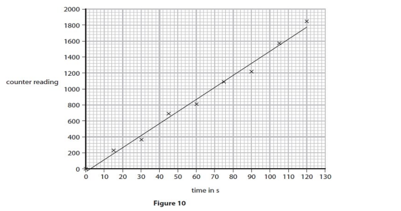

Зарядталған бөлшектерді тіркеу әдістері
Вильсон камерасы
Вильсон камерасы, сондай-ақ Вильсон бұлты, жоғары энергиялы ғарыштық сәулелердің бөлшектерін бақылау және зерттеу үшін қолданылатын құрылғы. Вильсон камерасының жұмыс принципі атмосфералық газдардың буын бөлшектердің камера ішіндегі газ қоспасы арқылы өтуінен кейін конденсациялауға негізделген.
Жоғары энергиялы бөлшек камерадағы газ қоспасы арқылы ұшқанда, ол өз жолындағы газ атомдарын иондап, электр зарядталған бөлшектерді немесе иондарды тудырады. Бұл иондар конденсация ядролары ретінде әрекет етеді, олардың айналасында конденсация тамшылары пайда бола бастайды. Тамшылар көрінетін мөлшерге дейін өсіп, микроскоппен байқауға және зерттеуге болатын із қалдырады.
Вильсон камерасын пайдалана отырып, зерттеушілер ғарыштық сәулелердің энергиясы, бөлшектердің түрлері және қозғалыс бағыты сияқты қасиеттері мен сипаттамаларын зерттей алады. Бұл ғарыштық сәулелердің құрамы мен шығу тегі және олардың Жер атмосферасымен өзара әрекеттесуі туралы маңызды ақпарат алуға мүмкіндік береді.
Ұшқын камера
Ұшқын камерасы - бұл бөлшектердің траекториясын визуализациялау үшін газдағы көшкін разрядының принципін пайдаланатын зарядталған бөлшектер детекторы.
Жұмыс принципі:
- Камера төмен қысымда газбен (мысалы, гелий немесе аргон) толтырылған металл корпус болып табылады.
- Камераның ішінде екі металл электрод бар, олардың арасында жоғары кернеу қолданылады.
- Зарядталған бөлшек (мысалы, альфа-бөлшек немесе электрон) газ арқылы өткенде, ол газдың атомдарын иондандырады, электрондар мен иондардың жұптарын жасайды.
- Бұл жұптардағы электрондар электр өрісінің әсерінен үдетіліп, басқа газ атомдарымен соқтығысып, оларды иондайды.
- Көшкіндік үдерісі жылдам өсіп, зарядталған бөлшектің траекториясында көрінетін ұшқын тудырады.
Маңыздылығы:
- Көрнекілігі: ұшқын камерасы зарядталған бөлшектердің траекториясын «көруге» мүмкіндік береді. Бұл өз кезегінде олардың қасиеттерін анық көрсетіп, зерттеуге мүмкіндік береді.
- Қарапайымдылық: Ұшқын камерасын жасау және пайдалану салыстырмалы түрде қарапайым.
- Қолжетімділік: ұшқын камерасы иондаушы сәулеленудің құбылыстарын, заңдылықтарын және қасиеттерін көрсетуге арналған қолжетімді құрал болып табылады.
Көпіршікті камера
Көпіршікті камера – бұл бөлшектердің қозғалыс траекториясын көпіршіктердің тізбегі арқылы көрсететін зарядталған бөлшектердің детекторы.
Көпіршікті камера жұмысын іске асыру үшін ең алдымен мөлдір және қайнау температурасы төмен сұйықтық қажет. Сұйықтық мөлдір болса, біз көпіршіткерді анық көре аламыз, ал жұмысшы заттың қайнау температурасы азайған сайын камераның “сезімталдығы” яғни зарядталған бөлшектердің байқалу ықтималдылығы артады. Мысал ретінде сұйық сутекті алайық.
Сіздер білетіндей Тау шыңында су 100 градус цельсийдан төменірек темперадурада қайнайды. Бұл таудағы қысымның аздығына байланысты. Тура сол сияқты біз көпіршікті камерадағы қысымды тез арада азайтсақ өте тұрақсыз аса қызыған сұйықтық аламыз. Мұндай сұйықтықтардың температурасы олардың қайнау температурсаынан үлкен болады.Енді мұндай тұрақсыз сұйықтықтан зарядталған бөлшектер өткенде затымыз иондалады. Демек, сұйықтықтағы бөлшектердің атомдары мен электрондары ажырайды. Ажырау нәтижесінде иондолған аймақ қызиды да сол жерде бу түзіледі де көпіршіктер пайда болады. Бұл көпіршіктер зарядатлаған дененің траекториясын қайталайды.
Көпіршікті камерадан өткен бөлшектерің зарядын анықтау үшін көбінесе магниттік өріс қолданылады. Детектордан өткен зарядтар магнит өрісі ықпалынан айнымалы қозғала бастайды.
Есептер:
Көпіршікті ваннадан өтетін гамма сәулесі электрон-протон жұбын қалыптастырады. Көрсетілгендей,екі бөлшекте жоғары қозғалады, біреуі оңға спираль тәрізді(сағат тілімен бойынша) ,екіншісі солға(сағат тіліне қарсы) қозғалады. Магнит индукция векторы 1.2*10^-3 Т тең.(бізден ары қарай)
(А) Электрон мен протонға түсетін магнит өрісін ескере отыра, қай бөлшек қай екенін анықта.(электрон/протон оңда/солда)
(В) Электрон жоғары бағытта қозғалады деп қарастырсақ, электронға радиусы 5 мм иірімді қалыптастыруы үшін қандай жылдамдық қажет?
(С) Егер электрон бізден ары қарай бағытталса, электрон траекториясы қалай өзгеруші еді?
Жауабы:
(А) солда позитрон, оңда электрон
(В) 1055км/сек
(С) электрон траекториясы түзу сызық болар еді
Сцинтилляциялық кристалл
Сцинтилляциялық кристалл гамма фотондарды бір немесе бірнеше соқтығыс процестерімен жұтып, олардың энергиясының бір бөлігін көрінетін жарық пен ультракүлгін (УК) фотондарға түрлендіреді.
Ол қысқа толқындық сәулеленуден (гамма фотондар) ұзын толқын ұзындығы сәулеленуді (көрінетін және УК) жасайды. Кристаллдың жарық шығаруы онымен әрекеттесетін гамма фотонның энергиясына байланысты болғандықтан, гамма-камера энергияны таңдамалы санау үшін пайдаланылуы мүмкін. Кристалл неғұрлым қалың болса, соғұрлым ол гамма фотонды тоқтата алады (және осылайша анықтай алады) және мұндай кристалға негізделген детектор соғұрлым тиімдірек болады. Дегенмен, кристалл неғұрлым қалың болса, мұндай кристалы бар детектордың ішкі ажыратымдылығы соғұрлым өрескел болады. Осы мәселелерге қарамастан, кристалда гамма фотондардың өзара әрекеттесу ықтималдығын арттыру және анықталатын жарық фотондарының өндірісі мен шығуын арттыру үшін сцинтилляциялық кристалдың жоғары атомдық нөмірі және жоғары тығыздығы болғаны жөн.
Гамма фотон коллиматор арқылы өтіп, кристалға сіңгеннен кейін көрінетін жарық фотондары шығарылады және кристалдың бойына таралады. Кристаллдың шығу бетіндегі оқиғаның бейнесі (гамма-фотон сцинтилляциясы-кристалдық өзара әрекеттесу) күткендегідей кішкентай нүкте емес, ол аймақтың ең жарық бөлігі бар кең кеңістікте таралған жарық аймағы болып табылады, шамамен гамма фотонның кристалмен әрекеттесетін орнымен сәйкес келеді. Сцинтиллятордың жарық шығысы жарық бағыттағыш деп аталатын оптикалық мөлдір материал тақтасы арқылы PMT массивіне беріледі. Жарық бағыттағышының қалыңдығы, кейде пішіні бір гамма-фотонның сцинтилляциялық жарығы PMT-лер арасында барлық орындар үшін өзара әрекеттесу орнын дәл анықтауға мүмкіндік беретіндей етіп таңдалады.
Ядролық фотоимульсия
Ядролық фотоимульсия - ядролық бөлшектердің фотосезімтал материалмен әрекеттесіп, оның иондалуына немесе құрылымының өзгеруіне әкелетін процесс.
Ядролық бөлшектер фотосезімтал материал арқылы өткенде, олар анықтауға болатын із қалдырады. Бұл іздер ядролық бөлшектердің өтуін жазу және талдау үшін пайдаланылуы мүмкін, бұл, мысалы, жоғары энергиялық физикада немесе радиациялық өлшеулерде пайдалы.
Гейгер Мюллер санағышы
Гейгер есептегіші – радиация сияқты иондаушы сәулелену деңгейін өлшеуге арналған құрылғы. Ол альфа, бета және гамма бөлшектерін анықтайды және санайды. әртүрлі орталарда, соның ішінде ядролық нысандарда, денсаулық сақтау мекемелерінде және табиғи сәулелену көздерінде радиациялық қауіпсіздікті бақылау үшін пайдаланылуы мүмкін.
Гейгер санағышының трубкасында әдетте аргон секілді төмен қысымдағы интертті газ болады. Трубканың ортасында ток көзінің оң полюсіне жалғанған стержень орналасқан (анод). Трубканың қабырғасына ток көзінің теріс полюсі жалғанады(катод). Трубканың бір жағында жұқа слюдадан жасалған терезе болады(thin mica window). Радиоактивті изотоптың бір бөлшегі құрылғының қабырғалары және сол терезесі арқылы еніп, газ атомдарымен соқтығысып, олардан электрондарды қағып, оң иондар түзеді. Электр өрісінің әсерінен электрондар мен оң иондар сәйкесінше анод пен катодқа қарай қозғалады (айтарлықтай жоғары энергияға ие болад) және басқа атомдарды иондайды. Қысқа уақыт ішінде көптеген иондар туындап, электродтарда разрядталады. Электрлік сигналдарды (импульстарды) санағыш тіркеп, оларды санайды және нәтижелерді дисплей арқылы көрсетеді.
Гейгер есептегіші бөлшекті сипаттай алмаса да, ол сәулеленудің бар немесе жоқ екендігін анықтау үшін қолдануда оңай.
Есептер:
1. Мұғаліп фондық сәулеленуді өлшеу үшін Гейгер-Мюллер түтігі мен есептегішін пайдаланады. Есептегіштің көрсеткіші минутына 34 ретті құрайды.
i. Мұғалім Сол Гейгер-Мюллер түтігінің алдына 15 см бета сәулелену көзін қояды. Есептегіш түтіктегі көрсеткіш қазір минутына 468 санауды құрайды. Гейгер-Мюллер түтігі анықтаған радиацияның бета сәулелену көзінен қанша мөлшерде шығатынын есептеңіз.
ii. Мұғалім бета сәулелену көзі мен Гейгер-Мюллер түтігінің арасына қалың алюминий парағын қояды. Есептегіш түтіктегі көрсеткішті бағалаңыз.
iii. Неліктен (ii) сұраққа жауап тек болжам екенін түсіндіріңіз.
Жауабы:
i. 434
ii. 29-39 арасындағы жауаптар қабылданады
iii. себебі радиоактивті ыдырау-бұл кездейсоқ процесс/себебі фон саны әр уақытта өзгеріп отырады
2. G-m түтігі есептегішке қосылған. Мұғалім G-M түтігін радиоактивті көзге жақын орналастырады. Студент есептегіш пен сағатты бір уақытта іске қосады және есептегіштегі көрсеткіштерді әр 15 секунд сайын жазып отырады. Студент 10-Суретте көрсетілгендей нәтижелерді ең жақсы сәйкес келетін сызықпен сызады.
i. Графиктен орташа санау жылдамдығын, санау / с-пен есептеңіз.
Жауабы:
12-16 арасындағы жауаптар қабылданады. (градиент арқылы есептейді)